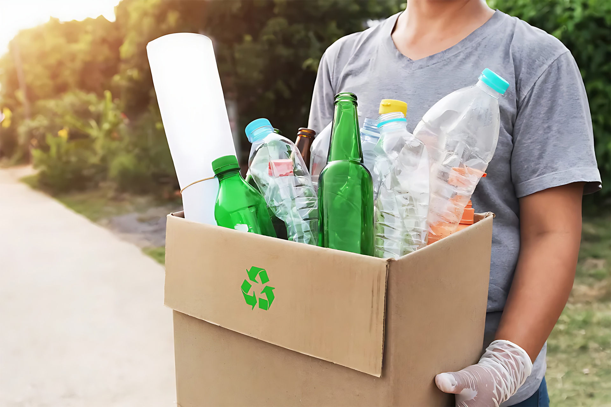

Plante uma Árvore
O reflorestamento é uma das nossas causas principais. Você pode contribuir plantando árvores em sua comunidade. Reúna amigos, família ou vizinhos e organize um dia de plantio de árvores em áreas degradadas. Certifique-se de escolher espécies nativas adequadas à região e acompanhe o crescimento delas ao longo do tempo.

Faça Reciclagem
A reciclagem é uma forma simples e eficaz de reduzir o impacto ambiental. Separe corretamente o lixo em reciclável e não reciclável e incentive outras pessoas a fazerem o mesmo. Pesquise os pontos de coleta seletiva em sua região e certifique-se de que os materiais recicláveis sejam encaminhados corretamente.
Adote Energias Renováveis
Considere a possibilidade de instalar painéis solares em sua casa ou empresa. Aproveite as energias renováveis disponíveis em sua região, como solar, eólica ou hidrelétrica. Além disso, economize energia desligando aparelhos eletrônicos quando não estiverem em uso e substitua lâmpadas convencionais por lâmpadas de LED.
Se você acredita em nossa missão e deseja apoiar financeiramente nossos projetos, sua doação é fundamental. Clique aqui para fazer uma contribuição e junte-se a nós na construção de um futuro mais sustentável.